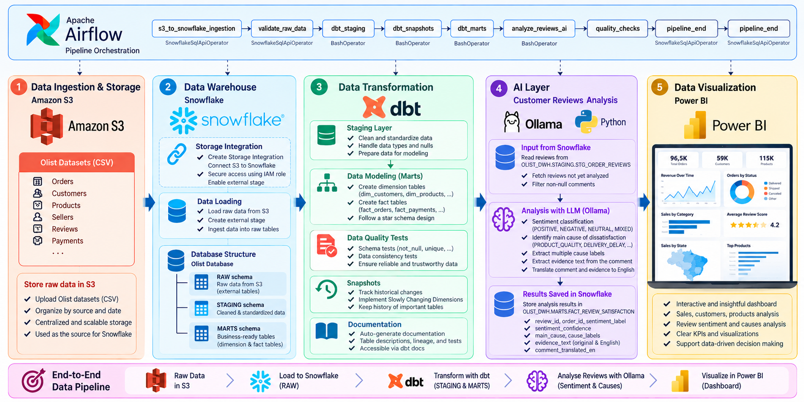
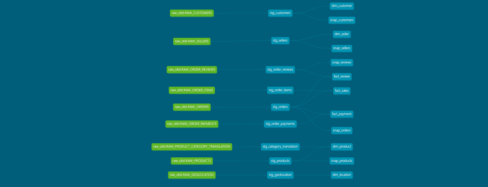

Data Engineering · AI Analytics · Business Intelligence
Olist E-Commerce Platform
An end-to-end cloud data pipeline that turns the Brazilian Olist e-commerce dataset into analytics-ready Snowflake models, LLM-enriched customer insights, and interactive Power BI reporting.
A public GitHub URL is not present in the project README. When available, add it to the primary project-resource button in this page.
Project Overview
The project centralizes multi-table Olist data in a cloud warehouse, creates reusable staging and dimensional models, enriches written reviews with structured AI insights, and presents the results to decision-makers. It addresses the full lifecycle from cloud object storage and secure ingestion through transformation, quality validation, orchestration, and visualization.
Business context and challenges
Fragmented operational data: orders, customers, products, sellers, payments, reviews, and geography are organized into a consistent analytical warehouse.
Unstructured customer feedback: written comments are classified and enriched with dissatisfaction causes, evidence, and English translations.
Reliable analytics delivery: dbt tests, snapshots, documentation, and an Airflow DAG provide repeatable engineering patterns, while the DAG remains configured and visualized rather than fully validated end to end.
System Architecture
Amazon S3 stores the source CSV files. Snowflake uses a storage integration and external stage to load them into RAW, dbt transforms them through STAGING into MARTS, Python and Ollama add review intelligence, Apache Airflow coordinates the processing tasks, and Power BI consumes the prepared analytical data.

Global pipeline architecture from source storage to business intelligence.
Data Ingestion & Warehousing
Amazon S3: stores the related Olist CSV datasets as the repeatable cloud ingestion source.
Snowflake integration: an S3 storage integration and external stage provide controlled access to source files.
Raw loading: Snowflake SQL creates file formats and raw destination tables, then loads the source data.
Warehouse layers:RAW preserves landed data, STAGING standardizes it, and MARTS exposes business-ready facts and dimensions.
Data Transformation with dbt
dbt standardizes types and null handling in nine staging models, then builds a star-schema-oriented marts layer with five dimensions, three facts, and the AI-enriched review satisfaction table.
17 dbt models across staging and marts.
9/9 configured quality tests passed, including not-null and uniqueness checks.
Five snapshots track historical changes for customers, orders, products, reviews, and sellers.
Generated documentation and lineage make dependencies inspectable.

dbt model dependency graph and lineage.
AI-Powered Customer Review Analysis
The Python process reads pending non-empty reviews from Snowflake, sends batches of 20 to Ollama using gpt-oss:120b-cloud, validates the structured response, and persists accepted records in FACT_REVIEW_SATISFACTION.
Sentiment classification: assigns POSITIVE, NEGATIVE, NEUTRAL, or MIXED labels with model-provided confidence.
Dissatisfaction analysis: selects a primary cause and optional controlled taxonomy labels such as delivery delay, product quality, packaging, or customer service.
Evidence and translation: extracts a supporting excerpt and produces English translations while retaining the original text.
Validation and incremental behavior: checks JSON fields, labels, confidence bounds, and evidence presence, then avoids reinserting processed review/order keys.
This is prompt-based LLM analysis rather than a separately trained classifier; confidence values are model-generated and are not independently calibrated probabilities.
Workflow Orchestration with Apache Airflow
The implemented olist_pipeline DAG defines eight sequential tasks combining Snowflake SQL operators and shell-based tasks:
1. s3_to_snowflake_ingestion: load source data from S3 into Snowflake.
2. validate_raw_data: validate the raw ingestion layer.
Cloud permissions and secrets: S3 integrations and IAM access must remain appropriately scoped, with credentials kept outside version control.
Operational dependencies: the Airflow environment requires sufficient Docker/WSL resources, valid Snowflake connections, mounted project files, dbt, Python packages, and AI configuration.
AI reliability: structured-output validation and incremental processing reduce malformed or duplicate results, but semantic accuracy is not independently verified for every classification or translation.
Next improvements: validate a complete Airflow execution with configured services and connections, and continue strengthening production observability and AI-quality evaluation.